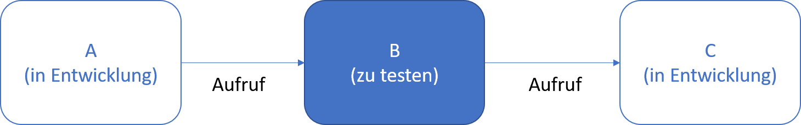
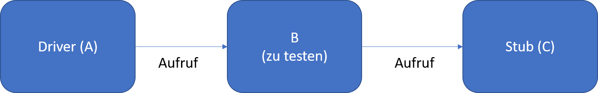
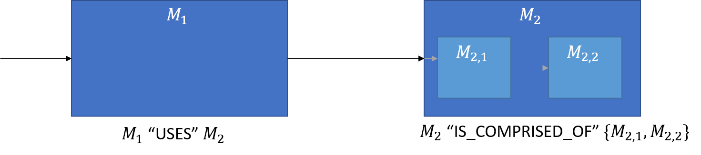

Testen im Grossen
Marcel Lüthi
Departement Mathematik und Informatik
Testen im Grossen
Testen im Grossen
Modultest (Unit Test)

- Module sind Teil von grossem System
- Hilfskonstrukte nötig:
- Andere Module noch in Entwicklung
- Zugriff auf richtige Ressourcen teuer
Stubs & Drivers


- Formale Spezifikationen helfen die Stubs und Drivers zu schreiben
Integrationstests
Big-bang
- Alle Module werden nur in Isolation getestet
- Danach ganzes System testen
Inkrementelles testen
- Progressives integrieren und testen
- "top down"
- stub ersetzten
- "bottom up"
- driver ersetzen
"Top down" vs "bottom up"

- In Hierarchien wird Testen einfacher
- Top down
- Nur stubs
- Bottom up
- Nur drivers
Was sind die Vorteile von Bottom Up / Top Down?
Beispiel

- Strategie 1
- $M_1$ testen, stub für $M_2$
- Strategie 2
- $M_{2,2}$ testen, driver für $M_{2,1}$
- $M_{2,1}$ designen und $M_2$ mittels driver testen
Systemtest
Testen des Ganzen Systems gegen die Funktionalen Anforderungen
- Wird häufig auf separater Testumgebung durchgeführt
- Testumgebung soll Kundenumgebung simulieren
Regressionstest
Wiederholung der Testfälle wenn Software verändert wird.
- Automatisierung der Tests enorm hilfreich
- Continuous Integration Systeme (wie z.B. Jenkins oder Travis) erlauben Tests bei jedem Commit durchzuführen
- Korrektheit kann durch Spezifikation, Testorakel, oder durch Vergleich mit früheren Testruns geprüft werden.
Akzeptanztest
Test aus Kundensicht - von Kunden durchgeführt
- Benchmark Test: Kunde hat eigene Testfälle
- Pilottest: System wird auf Kundensystem installiert (Beta Test)
- Resultat: Entscheid ob und was nachgebessert werden muss
Testplan
Hilft Aktivitäten zu planen und koordinieren
- Dokumentiert
- was getestet wird
- warum die Tests gemacht werden
- wie Tests ausgeführt werden
- wann Tests ausgeführt werden müssen
- Testplan sollte von separatem Team (oder anderem Entwickler) geschrieben werden.